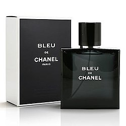

Bleu de Chanel (literally translated as "Chanel's Blue" or "Blue Chanel") is a men's fragrance created by Jacques Polge for French fashion house Chanel in 2010.[1] It was the first men's fragrance released by the brand since Allure Homme Sport in 2004, and the first men's masterbrand introduced since Égoïste in 1990.[2] The original fragrance is an eau de toilette;[3] the 2014 eau de parfum version was also formulated by Jacques Polge,[4] and the 2018 parfum version was formulated by his son Olivier Polge.[5] French actor Gaspard Ulliel was the first ambassador for Bleu de Chanel and remained as the face of the fragrance for twelve years, until his death in January 2022.

The marketing campaign for Bleu de Chanel was discussed as an example of branded entertainment in the fashion industry.[7]
French actor Gaspard Ulliel was announced as the first face of Bleu de Chanel on February 16, 2010,[8][9] becoming Chanel's first male ambassador.[10] A television commercial filmed in New York City premiered online on August 25, 2010 and was later released on TV in September 2010.[11] It was directed by Martin Scorsese and starred Ulliel and Ingrid Sophie Schram. In the commercial, Ulliel played a young filmmaker in the middle of a press conference who sees his ex-girlfriend (Schram) among the journalists and reminisces about the past and the beginning of their relationship, until he says: "I'm not going to be the person I'm expected to be anymore", gets up and leaves the room. It also featured The Rolling Stones' song "She Said Yeah".[12]
Chanel's American chief operating officer John Galantic noted that the selection of "the quintessential American film director" Scorsese was intended to create "a product and brand communication uniquely tailored to the American market," where the brand's men's fragrance business was not fully developed.[2] The fragrance hit the stores on September 13, 2010.[13]